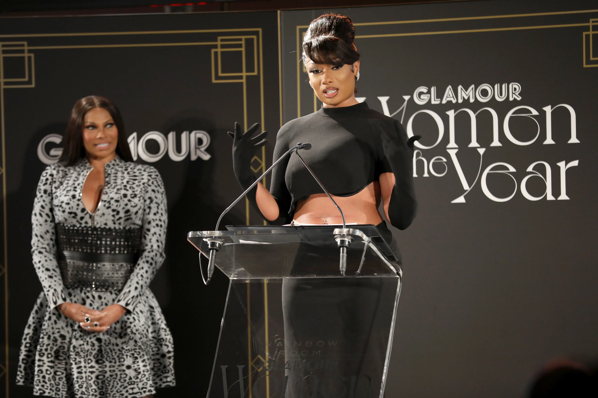

Megan Thee Stallion paying tribute to her late mother whilst accepting glamour 2021 Woman Of the Year Award
Timeline of Megan Thee Stallion's Life:
- 1995 - Born in Texas
- 2016 - Released first single "Like a Stallion"
- 2017 - Released song "Stalli" as a re-work of late musician XXXTentacion's "Look at me!"
- 2018 - Megan Thee Stallion Signed ith 1501 Certified Entertainment as the first female rapper signed to the label
- 2018 - "Tina Snow" her alter-ego had an EP named after it that was incredibly positively reviewed by critics.
- 2019 - Released "Big Ole Freak" which aws her first Billboard Hot 100 song
- 2020 - Won countless awards for her music, went viral on all social medias, including TikTok and featured in the Time 100 list of most influential people in the world